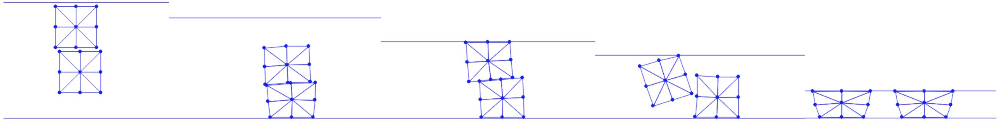

Continuous Collision Detection
Now, we have all the ingredients to solve for the search direction in a simulation with self-contact. After obtaining the search direction, we perform line search filtering for the point-edge pairs.
Implementation 21.4.1 (Line search filtering, BarrierEnergy.py).
# self-contact
for xI in bp:
for eI in be:
if xI != eI[0] and xI != eI[1]: # do not consider a point and its incident edge
if CCD.bbox_overlap(x[xI], x[eI[0]], x[eI[1]], p[xI], p[eI[0]], p[eI[1]], alpha):
toc = CCD.narrow_phase_CCD(x[xI], x[eI[0]], x[eI[1]], p[xI], p[eI[0]], p[eI[1]], alpha)
if alpha > toc:
alpha = toc
Here, we perform an overlap check on the bounding boxes of the spans of the point and edge first to narrow down the number of point-edge pairs for which we need to compute the time of impact:
Implementation 21.4.2 (Bounding box overlap check, CCD.py).
from copy import deepcopy
import numpy as np
import math
import distance.PointEdgeDistance as PE
# check whether the bounding box of the trajectory of the point and the edge overlap
def bbox_overlap(p, e0, e1, dp, de0, de1, toc_upperbound):
max_p = np.maximum(p, p + toc_upperbound * dp) # point trajectory bbox top-right
min_p = np.minimum(p, p + toc_upperbound * dp) # point trajectory bbox bottom-left
max_e = np.maximum(np.maximum(e0, e0 + toc_upperbound * de0), np.maximum(e1, e1 + toc_upperbound * de1)) # edge trajectory bbox top-right
min_e = np.minimum(np.minimum(e0, e0 + toc_upperbound * de0), np.minimum(e1, e1 + toc_upperbound * de1)) # edge trajectory bbox bottom-left
if np.any(np.greater(min_p, max_e)) or np.any(np.greater(min_e, max_p)):
return False
else:
return True
To calculate a sufficiently large conservative estimation of the time of impact (TOI), we cannot directly calculate the TOI and take a proportion of it as we did for point-ground contact in Filter Line Search. Directly calculating the TOI for contact primitive pairs requires solving quadratic or cubic root-finding problems in 2D and 3D, which are prone to numerical errors, especially when distances are tiny and configurations are numerically degenerate (e.g., nearly parallel edge-edge pairs in 3D).
Thus, we implement the additive CCD method (ACCD) [Li et al. 2021], which iteratively moves the contact pairs along the search direction until the minimum separation distance is reached, to robustly estimate the TOI.
Taking a point-edge pair as an example, the key insight of ACCD is that, given the current positions , , and search directions , , , its TOI can be calculated as
assuming is the point on the edge that will first collide with. The issue is that we do not know a priori. However, we can derive a lower bound for as
By taking a step with this lower bound , we are guaranteed to have no interpenetration for this pair. However, although straightforward to compute, can be much smaller than . Therefore, we iteratively calculate and advance a copy of the participating nodes by this amount, accumulating all to monotonically improve the estimate of until the point-edge pair reaches a distance smaller than the minimum separation, e.g., the original distance. The implementation is as follows, where we first remove the shared components of the search directions so that they have smaller magnitudes to achieve earlier termination of the algorithm.
Implementation 21.4.3 (ACCD method implementation, CCD.py).
# compute the first "time" of contact, or toc,
# return the computed toc only if it is smaller than the previously computed toc_upperbound
def narrow_phase_CCD(_p, _e0, _e1, _dp, _de0, _de1, toc_upperbound):
p = deepcopy(_p)
e0 = deepcopy(_e0)
e1 = deepcopy(_e1)
dp = deepcopy(_dp)
de0 = deepcopy(_de0)
de1 = deepcopy(_de1)
# use relative displacement for faster convergence
mov = (dp + de0 + de1) / 3
de0 -= mov
de1 -= mov
dp -= mov
maxDispMag = np.linalg.norm(dp) + math.sqrt(max(np.dot(de0, de0), np.dot(de1, de1)))
if maxDispMag == 0:
return toc_upperbound
eta = 0.1 # calculate the toc that first brings the distance to 0.1x the current distance
dist2_cur = PE.val(p, e0, e1)
dist_cur = math.sqrt(dist2_cur)
gap = eta * dist_cur
# iteratively move the point and edge towards each other and
# grow the toc estimate without numerical errors
toc = 0
while True:
tocLowerBound = (1 - eta) * dist_cur / maxDispMag
p += tocLowerBound * dp
e0 += tocLowerBound * de0
e1 += tocLowerBound * de1
dist2_cur = PE.val(p, e0, e1)
dist_cur = math.sqrt(dist2_cur)
if toc != 0 and dist_cur < gap:
break
toc += tocLowerBound
if toc > toc_upperbound:
return toc_upperbound
return toc
The final simulation results are demonstrated in Figure 21.4.1.
